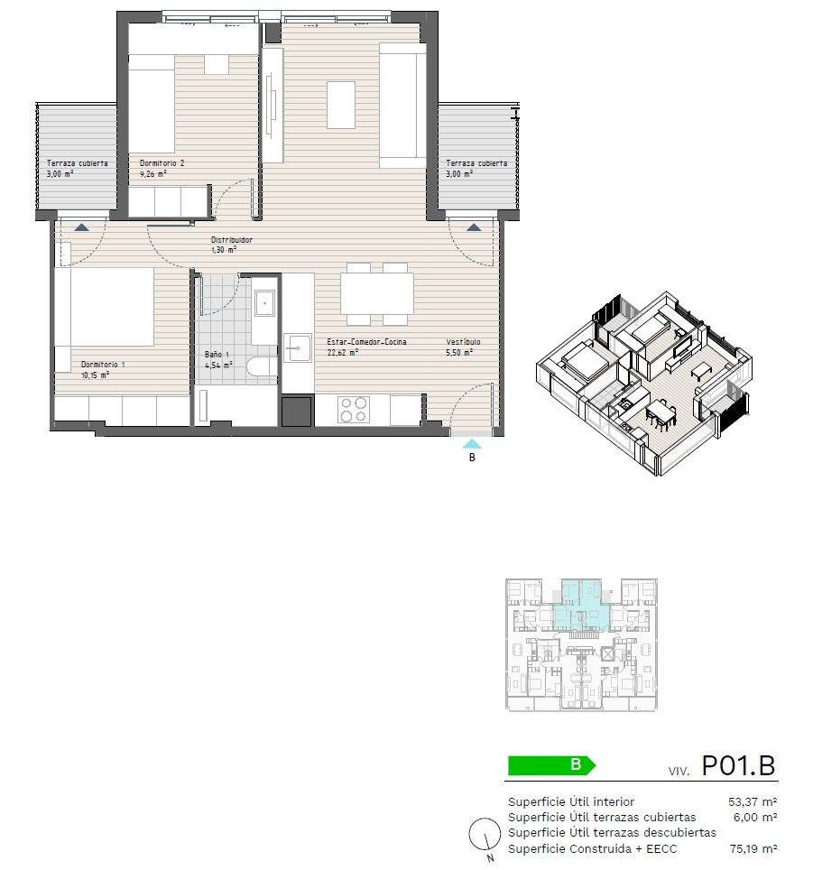
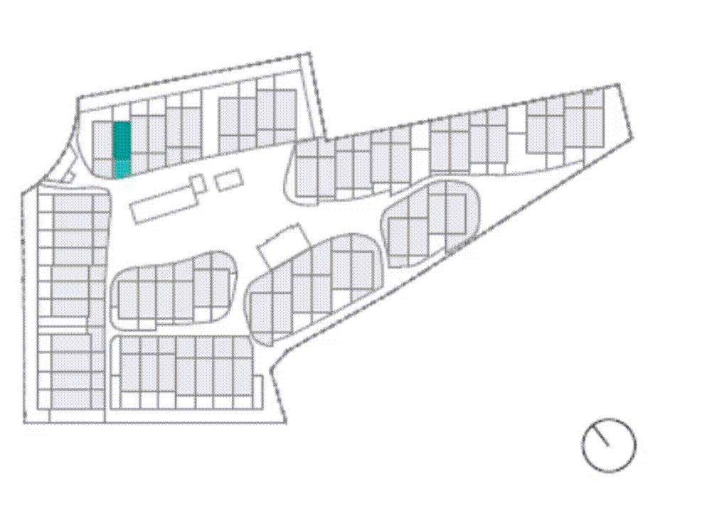
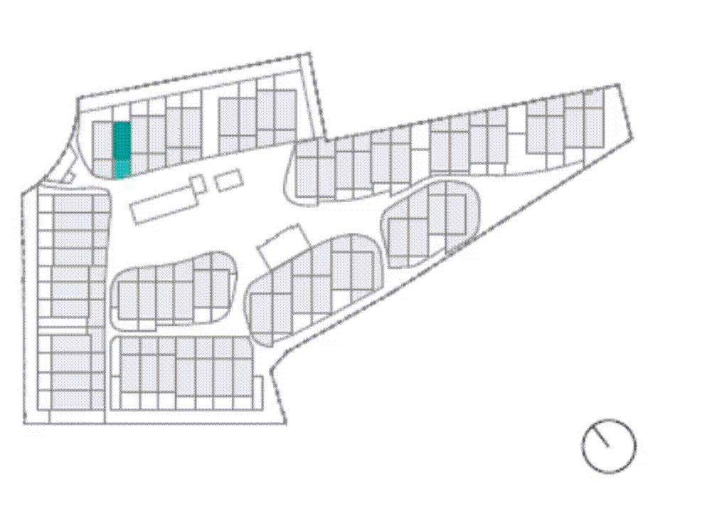
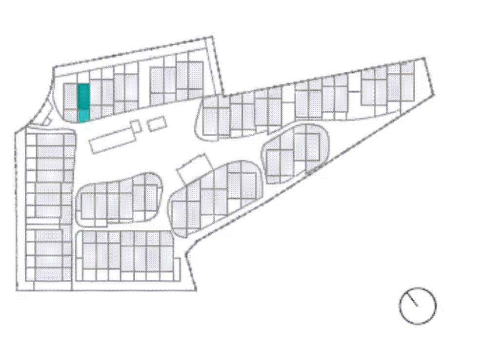

En el Master de BIM en 2018 tuve mi primera toma de contacto con Dynamo,
aunque ya venía de usar herramientas como Grasshopper. Desde entonces he
desarrollado profesionalmente y por cuenta propia una gran cantidad de
automatizaciones tanto de modelado, como de gestión del modelo BIM, como
de interacción con otras herramientas como bases de datos XLS o archivos
CAD.
AUTOMATIZACIÓN PLANOS COMERCIALES
A lo largo de mi estancia en Triar, se realizaron varias promociones que requerían de planos comerciales. Al final se
propuso automatizar esta tarea en la medida de lo posible. Así se hizo, incluso se pretendió dar un paso más y aprovechar
todas las ventajas del BIM y la automatización.
Mediante un sistema preciso de control de los parámetros de áreas y habitaciones en Revit, se creó la
automatización de:
· RECORTES DE VISTA para cada vivienda.
· 3D ESPECÍFICO de cada vivienda.
· "MONOS" O ESQUEMAS DE SITUACIÓN EN PARCELA.
· Colocación de la INFORMACIÓN EN EL PLANO.


TRIAR - MONTÓ . CREAR ELEMENTOS A PARTIR DE UNA BASE DE DATOS XLS
TRIAR - MONTÓ . CREAR MATERIALES AUTOMÁTICAMENTE
TRIAR - MONTÓ . CREAR TIPOS DE MURO AUTOMÁTICAMENTE
La empresa Montó nos contactó para ayudarles a tener sus nuevos
catálogos de pinturas y soluciones de fachada dentro del ecosistema BIM.
Habiendo así una relación entre colores y materiales de Revit, y
soluciones de fachada y tipos de muro.
Se generó entonces un proceso de automatización que crearía tanto los
materiales como los tipos de muro a partir de su base de datos.
Sirviendo también para futuras actualizaciones.

 
